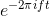
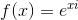
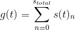

Usage Of Pi In the Fourier transformation and its computation, visualized.
By James Oswald
For Categories: Computer Program and... Short Math Paper? (Invent this category please)
I got the idea from this video, please watch it to understand the Fourier Transform (This is not by me)
What is Pi to the Fourier transformation?
Pi is found everywhere in Mathematics: Geometry, Calculus, Trigonometry, and Linear Algebra, etc.
No matter how hard you run from it, Pi pops up again and again in formulas that seemingly have nothing to do with its original purpose.
One such formula which Pi seems to magically appear in is the Fourier Transformation discovered by French Mathematician Joseph Fourier in 1822.
Put simply the Fourier transformation decomposes a signal function and breaks it up into its pure frequencies. If you want to know why and
how that actually happens, please watch the video as it inspired me to make this, as we will only be focusing on PIs role in the Fourier Transformation.
The Fourier Transformation can be represented in its base form as follows:

Such That:
f is our input frequency.
i is root(-1), an imaginary number,
t is time the x axis value for g(t) and what we integrate by.
e is Euler's number, 2.718281828459...
g(t) is our input signal function.
g{hat}(f) is the complex number resulting from input frequency f.
However since we will only be using pure infinitely repeating frequencies in hertz to build our example we can simplify this to be more relevant
to the situation:

The key to understanding where pi comes in here is this segment of the equation:

This is portion is called Euler's equation and can be written more standardly as:

such that:
e is Euler's number, 2.718281828459...
x is our input in radians
i is root(-1), an imaginary number
f(x) is a complex number resulting from the input, x.
When graphed on the complex plain this will result in a complex point on a complex unit circle x radians around the origin.
This particular property creates the relationship:

and

which we will utilize later to compute the Fourier transformation.
This leaves us looking at what our x is in this case of Euler's within the Fourier transformation.
It should be clear that:

But what do these numbers mean? How do they impact the radians were supposed to travel? One helpful way I found to think about this
is to think of them as having units. t in seconds and f in Hertz (1/seconds) these both cancel out when multiplying them,
leaving ft as a constant representing how many rotations to perform around our complex unit circle. And finally what's 1 full rotation in radians
around a circle? 2pi; the final member of our x. (The negative isn't particularly important here and just specifies the direction rotation,
this allows the real part of the final output to have the original frequencies land on the crests of the waves rather then the troughs).
So what is Pi really to the Fourier transformation? heres the full version.
pi is half of one full rotation of the complex unit circle which when multiplied by a frequency f and time t and
plugged in for x in Euler's equation, which if then then multiplied by a signal function, g(t), produces a complex function
which when integrated by time t results in a complex function g{hat}(f) who's parts can be used to discover the original input frequencies
of the signal function g(t).
Computing the Fourier Transformation
This is my program implementation of what was shown in the video, to view the code and how I compute it please view the page source. All code (including the graphing) is mine and was done without any outside functions or libraries.
This simulation in its default state can handle frequencies between 0 and 23, any more will produce faulty results due to the imperfect approximation of the true integral via a Trapazoidal with 50 slices. Any increases to its stats stats will slow the program down further, feel free to experiment with the settings.
Add frequencies here via a comma separated list. Ex 5,7,8
Sum of Frequencies
.gif)
using Euler's equation to wrap g(t) around the origin in the complex plain
Real portion of g{hat}(t): wave crests at input frequencies
Complex portion of g{hat}(t): x-intercepts at input frequencies
settings
Approximate integral with slicesT[step] for all graphs
Frequency of c(t,f)|f =
Sources:
Just the 3blue1brown video, please go check them out on Youtube